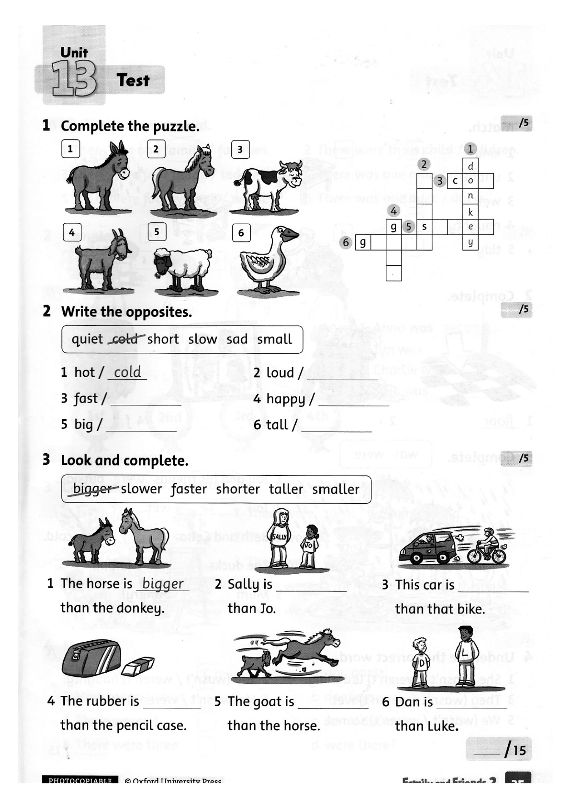
Làm lại bài kiểm tra tại nhà
Units 13-15
Bố mẹ tải bản đề sạch và in cho con làm lại. Sau khi con hoàn thành, mở Đáp án đối chiếu ngay trên web để xem đáp án cùng phần giải thích từng câu.
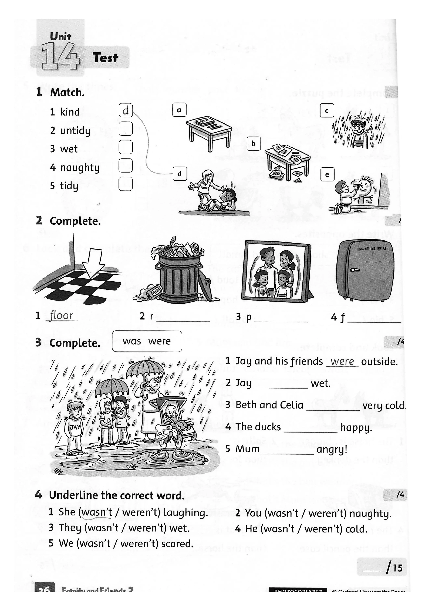
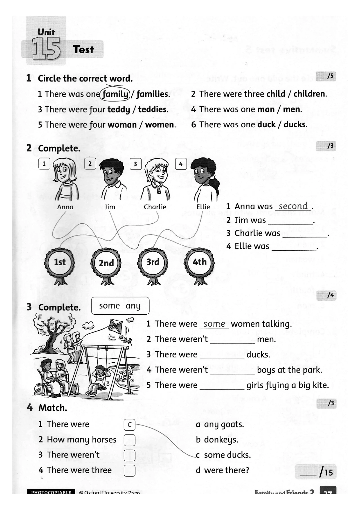
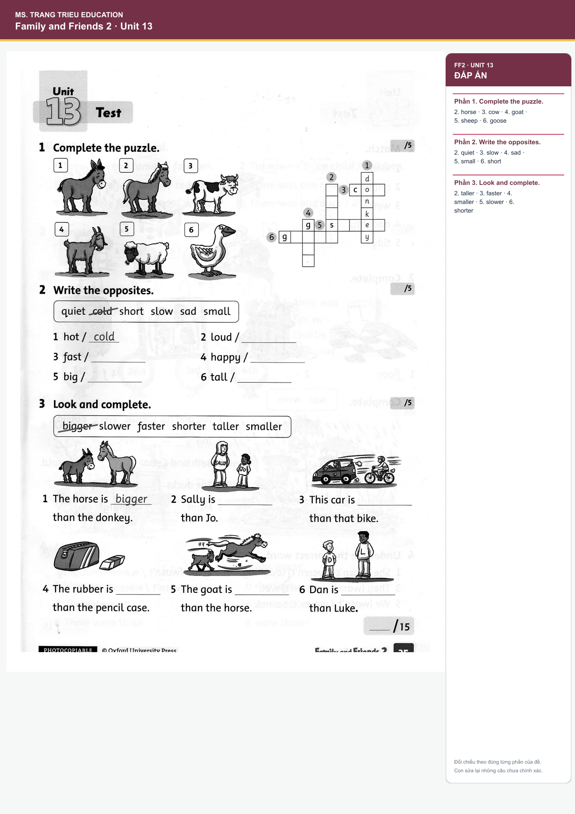
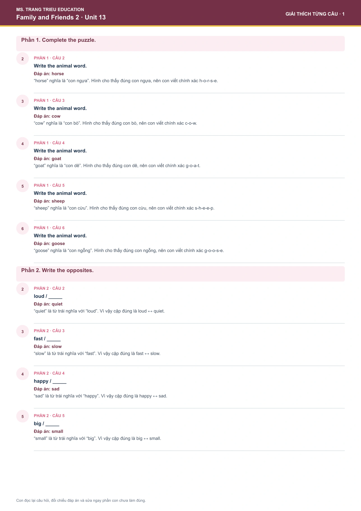
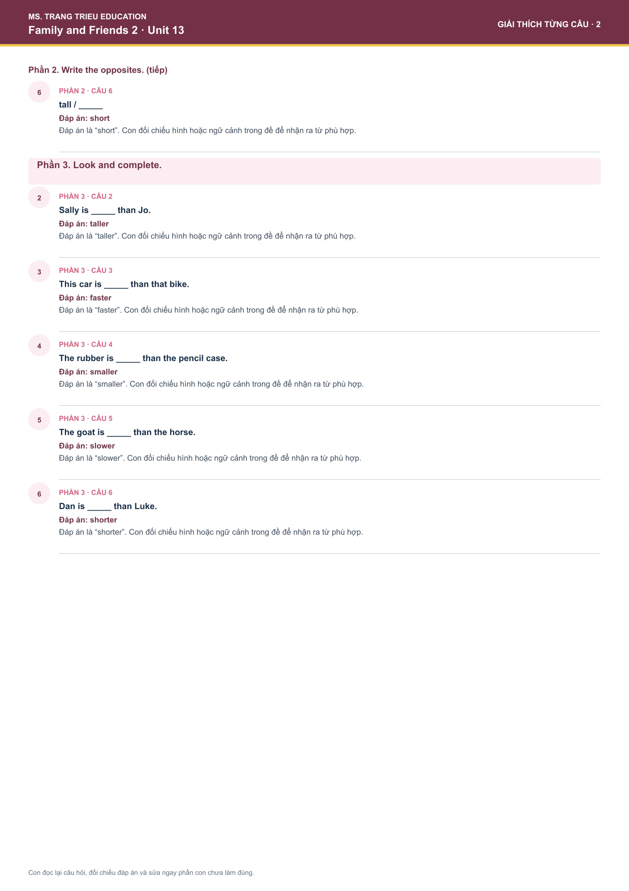
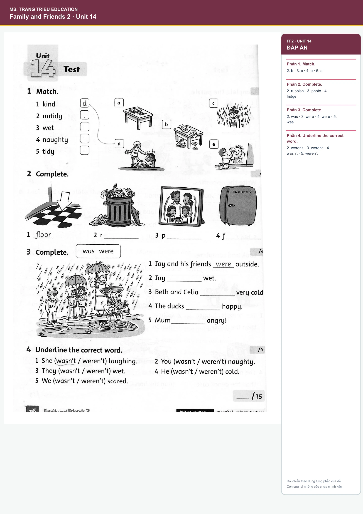
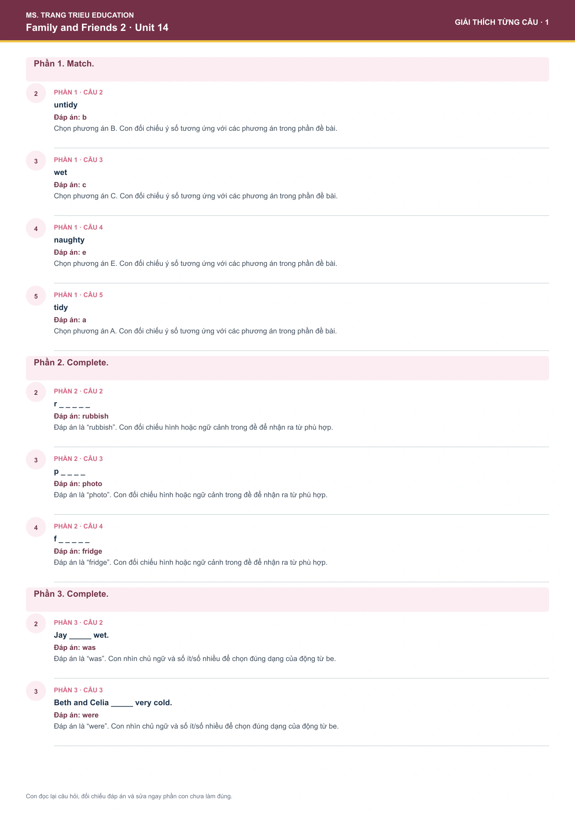
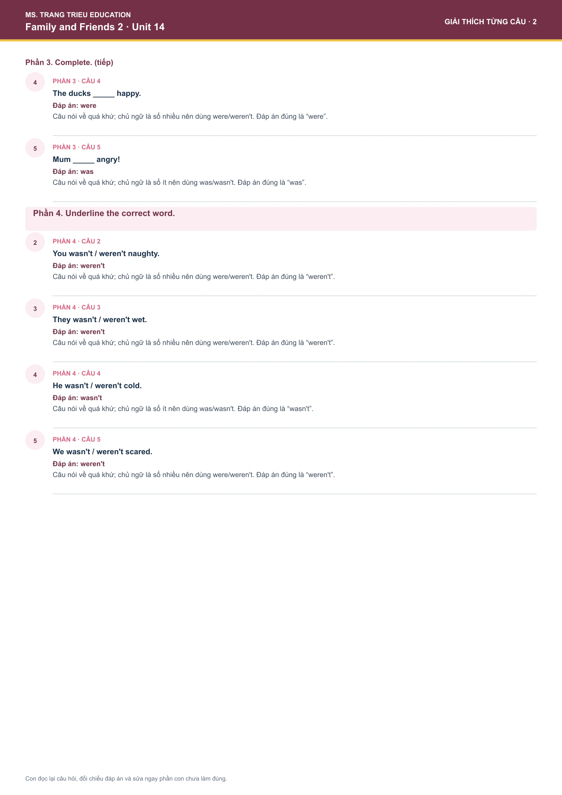
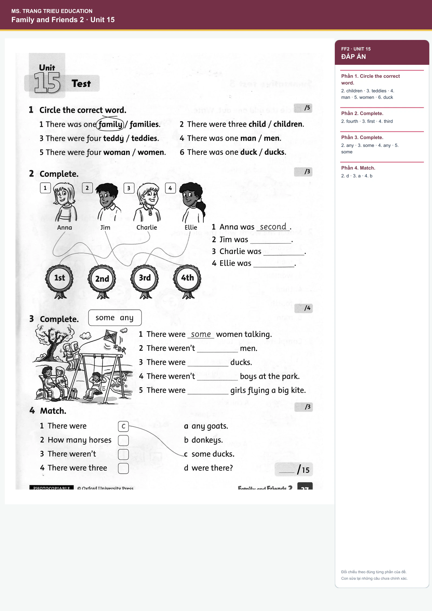
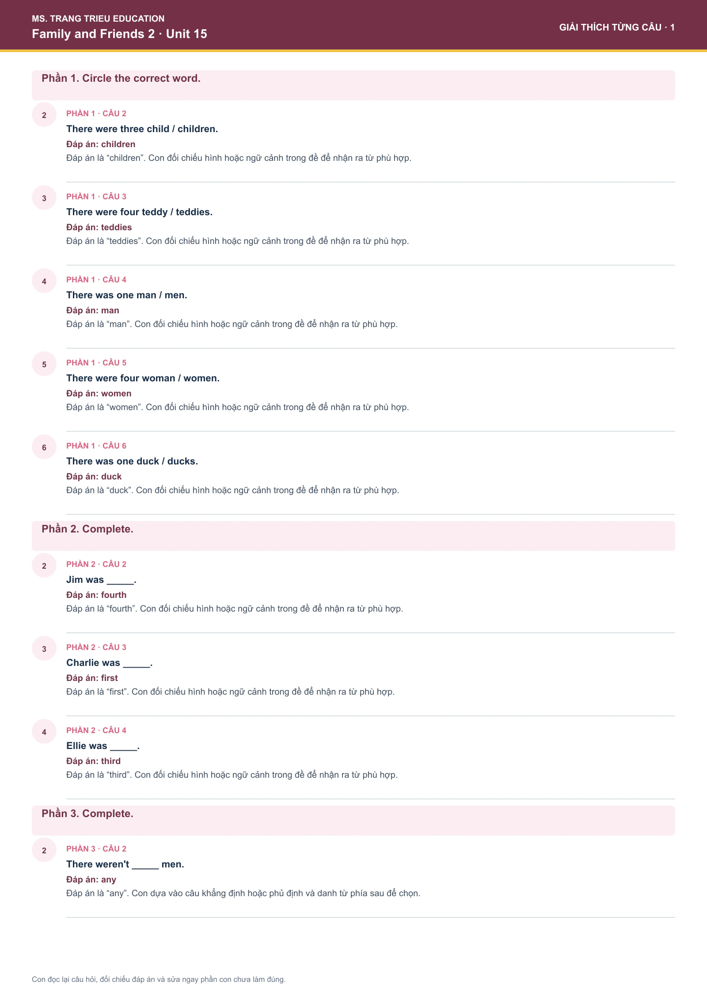
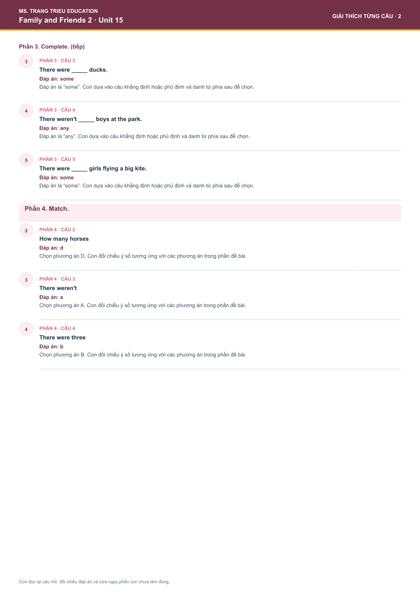